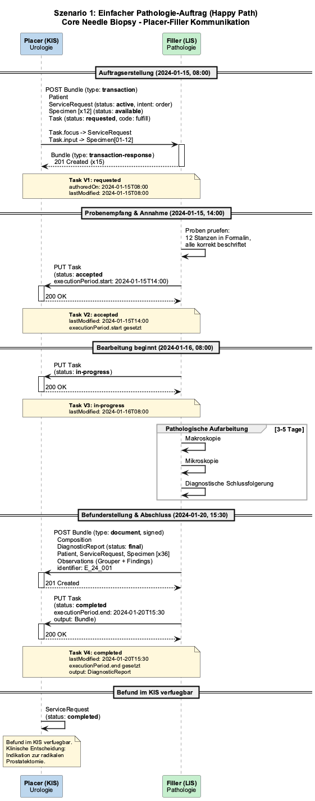
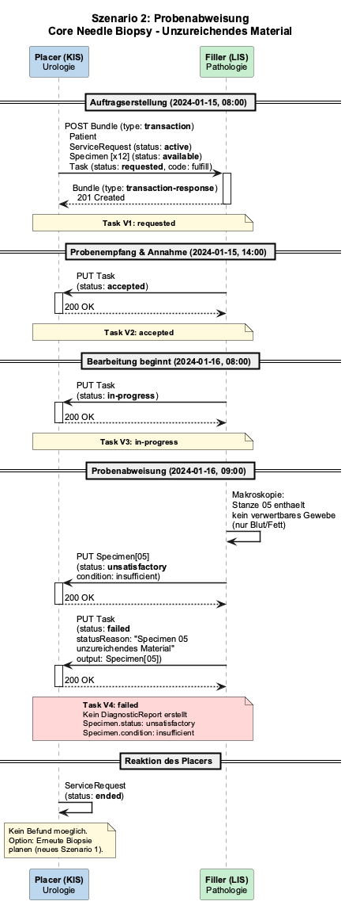
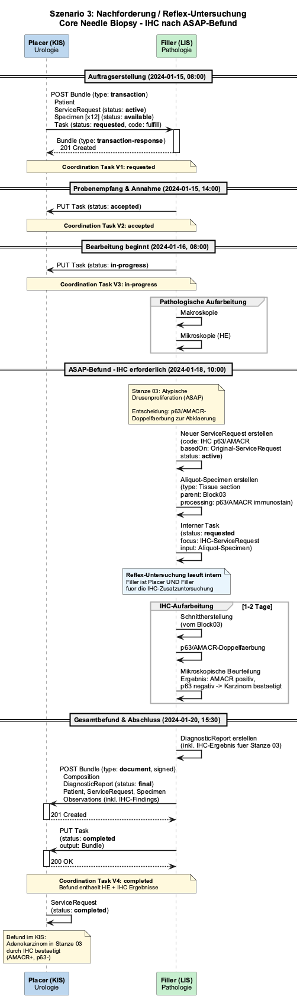
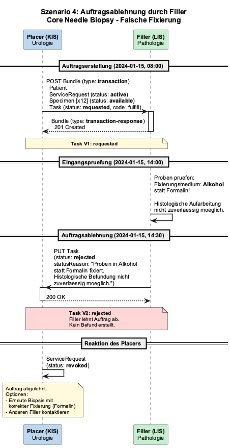
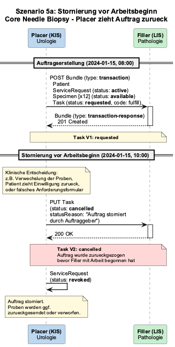
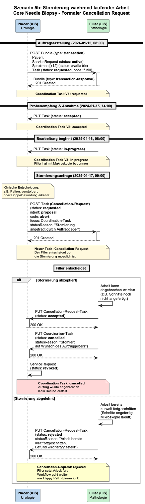

Prostate Cancer Specification - Local Development build (v0.1.0) built by the FHIR (HL7® FHIR® Standard) Build Tools. See the Directory of published versions
Workflow Scenarios
Workflow Scenarios
Diese Seite beschreibt die Sendeszenarien fuer Pathologie-Auftraege basierend auf dem Clinical Order Workflows (COW) IG (v1.0.0-ballot). Der Fokus liegt auf der Kommunikation zwischen Placer (KIS/Urologie) und Filler (LIS/Pathologie) ueber Coordination Tasks.
Der Standardfall: Kliniker sendet 12 Prostatastanzen zur histologischen Untersuchung, Pathologie erstellt Befund.
Ablauf:
Placer sendet Transaction Bundle (Patient, ServiceRequest, Specimen, Task) an Filler
Filler akzeptiert den Auftrag (Task: accepted)
Filler beginnt Bearbeitung (Task: in-progress)
Filler stellt Befund fertig und sendet Document Bundle zurueck (Task: completed)
Szenario 1: Happy Path

Szenario 2: Probenabweisung
Eine Stanze enthaelt kein verwertbares Prostatagewebe (nur Blut/Fett). Filler meldet Specimen als unsatisfactory.
Ablauf:
Auftrag wird normal gesendet und angenommen
Bei Makroskopie: Probe ist ungeeignet
Filler setzt Specimen.status auf "unsatisfactory" mit condition
Task wird auf "failed" gesetzt — kein DiagnosticReport erstellt
Szenario 2: Probenabweisung

Szenario 3: Nachforderung / Reflex-Untersuchung
Initiale HE-Mikroskopie zeigt eine atypische Drusenproliferation (ASAP) in einer Stanze. Pathologe ordnet eigenstaendig Immunhistochemie (p63/AMACR) an, um Karzinom zu bestaetigen oder auszuschliessen.
Gesamtbefund (HE + IHC) wird als Document Bundle zurueckgesendet
Szenario 3: Nachforderung (IHC nach ASAP)

Szenario 4: Auftragsablehnung durch Filler
Proben sind in Alkohol statt Formalin fixiert. Pathologie kann keine zuverlaessige Histologie durchfuehren und lehnt den Auftrag ab.
Ablauf:
Auftrag wird gesendet (Task: requested)
Filler prueft Proben bei Eingang — falsche Fixierung erkannt
Filler setzt Task auf "rejected" mit statusReason
Placer muss ggf. erneute Biopsie mit korrekter Fixierung veranlassen
Szenario 4: Auftragsablehnung

Szenario 5a: Stornierung vor Arbeitsbeginn
Probenverwechslung erkannt. Placer storniert den Auftrag bevor der Filler mit der Bearbeitung begonnen hat.
Ablauf:
Auftrag wird gesendet (Task: requested)
Placer setzt Task direkt auf "cancelled" — kein formaler Cancellation-Request noetig
ServiceRequest wird auf "revoked" gesetzt
Szenario 5a: Stornierung vor Arbeitsbeginn

Szenario 5b: Stornierung waehrend laufender Arbeit
Patient verstirbt waehrend der Aufarbeitung. Placer fragt Stornierung an, Filler entscheidet ob Abbruch noch moeglich ist.
Ablauf:
Auftrag laeuft bereits (Task: in-progress)
Placer sendet einen Cancellation-Request-Task (code: abort, intent: proposal)
Filler entscheidet:
Akzeptiert: Coordination Task wird cancelled, ServiceRequest revoked
Abgelehnt: Workflow geht weiter wie Happy Path
Szenario 5b: Stornierung waehrend laufender Arbeit

Szenario 6: Gruppierter Auftrag
Urologe bestellt gleichzeitig Standard-Histologie und molekularpathologisches BRCA1/2-Panel fuer dieselbe Biopsie-Einsendung. Zwei ServiceRequests mit gemeinsamer Requisition, zwei Tasks laufen parallel.
Ablauf:
Placer sendet zwei ServiceRequests mit gleichem requisition-Identifier (G24-001)
Filler bearbeitet beide parallel — Histologie (3-5 Tage) und MolPath (7-14 Tage)
Histologie-Befund wird zuerst fertig (Task-A: completed)
Pathologie erhaelt die Stanzen, aber klinische Angaben fehlen (PSA-Wert, MRT/PI-RADS, Vorbiopsie). Filler pausiert den Workflow und fordert Informationen an.
Ablauf:
Auftrag wird gesendet (Task: requested)
Filler setzt Task.businessStatus auf "Awaiting Information"
Filler sendet Communication mit konkreter Nachfrage